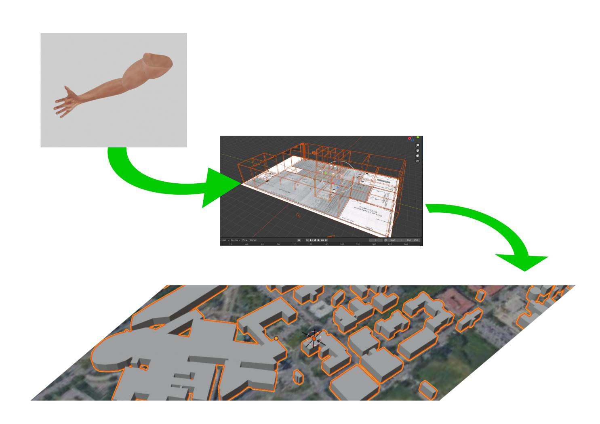

class: center, middle # Presentazione WRAP UP<br> TIROCINIO SULLA COMUNICAZIONE CON SIMULAZIONE IN AMBITO MEDICO-CHIRURGICO Sociologia della comunicazione Federico Monaco Ph.D. TRESEIZERO VIRTUAL LAB Dipartimento di Medicina e Chirurgia  --- # SYLLABUS Presentazione delle attività del 4 maggio dalle ore 17:00 alle ore 18:30<br> con pausa di 15' durante le attività asincrone<br><br> [] Programmazione e conduzione di attività di simulazione in realtà virtuale con rendicontazione e efficacia dei risultati<br><br> [] Rilascio di VR kits con ambienti e oggetti caricabili e modificabili su MOODLE (piattaforme elly, dolly, SELF, etc..) dai docenti per le proprie esigenze didattiche e di simulazione<br><br> [] Modellamento di percorsi virtuali di simulazione basati su scenari problem based learning e di scoperta degli ambienti virtuali<br><br> [] Progettazione di risorse e attività per la didattica, ricerca e territorio per l'università post-pandemia --- # UNA FORMAZIONE VIRTUALE SITUATA <p align="center">  </p> Per integrare gli skills negli ambienti e gli ambienti nelle mappe la ricerca prevede tre programmi distinti: [] DIGITAL SKILL - oggetti [] DIGITAL LAB - ambienti VR e panoramici a 360° [] DIGITAL CITY - mappe topografiche tridimensionali --- # DIGITAL SKILL <center> <div class="sketchfab-embed-wrapper"> <iframe title="skill simulation arm 01" width="745" height="300" src="https://sketchfab.com/models/18ac0007f60745f9b6c60e54fea63343/embed?autospin=1&autostart=1&preload=1&ui_theme=1"> </iframe> <p style="font-size: 13px; font-weight: normal; margin: 5px; color: ;"> <a href="https://sketchfab.com/3d-models/skill-simulation-arm-01-18ac0007f60745f9b6c60e54fea63343" target="_blank" style="font-weight: bold; color: ;">skill simulation arm 01</a> by <a href="https://sketchfab.com/Treseizero" target="_blank" style="font-weight: bold; color: #1CAAD9;">Treseizero</a> on <a href="https://sketchfab.com?utm_medium=embed&utm_source=website&utm_campaign=share-popup" target="_blank" style="font-weight: bold; color: #1CAAD9;">Sketchfab</a> </p> </div> <center>Prototipo di braccio per venipuntura realizzato dal Dr. Taliesin Haugh per virtual lab</center> <br> Oggetti digitali tridimensionali modelli di strumenti e parti anatomiche.<br> Noti come digital twins permettono di simulare azioni e condizioni reali. Sono realizzati modellando direttamente in 3D o da aerofotogrammetria. --- # DIGITAL LAB <center> <div class="sketchfab-embed-wrapper"> <iframe title="Simlab 3D CGI rendering test 01" width="745" height="200" src="https://sketchfab.com/models/855911ac65a24649aeec1a6e9bc4a28e/embed?autospin=1&autostart=1&preload=1"> </iframe> <p style="font-size: 13px; font-weight: normal; margin: 5px; color: ;"> <a href="https://sketchfab.com/3d-models/simlab-3d-cgi-rendering-test-01-855911ac65a24649aeec1a6e9bc4a28e" target="_blank" style="font-weight: bold; color: ;">Simlab 3D CGI rendering test 01</a> by <a href="https://sketchfab.com/Treseizero" target="_blank" style="font-weight: bold; color: #1CAAD9;">Treseizero</a> on <a href="https://sketchfab.com?utm_medium=embed&utm_source=website&utm_campaign=share-popup" target="_blank" style="font-weight: bold; color: #1CAAD9;">Sketchfab</a> </p> </div> Ambienti VR in simulazione ad alta fedeltà come nel prototipo di doll house del SIM.LAB <center> <iframe src="https://h5.veer.tv/photo-player?pid=316860" width="745" height="200" frameborder="0" allowfullscreen="allowfullscreen"></iframe> Ambienti virtuali a bassa fedeltà da scansione fotografica facilmente integrabili e modificabili da docenti e tutor in elly con il plugin H5P --- # DIGITAL CITY <center> <div style="padding:60.27% 0 0 0;position:relative;"><iframe src="https://player.vimeo.com/video/516568940?autoplay=1&loop=1&title=0&byline=0&portrait=0" style="position:absolute;top:0;left:0;width:100%;height:100%;" frameborder="0" allow="autoplay; fullscreen; picture-in-picture" allowfullscreen></iframe></div><script src="https://player.vimeo.com/api/player.js"></script> La mappatura digitale del territorio utile per scenari più realistici e complessi esterni al laboratorio e al perimetro ospedaliero tenendo conto di distanze e tempi di intervento nella simulazione --- # PROCEDURA PER TOUR VIRTUALI La realizzazione dei tour virtuali prevede le seguenti risorse e fasi: a) mappa con ambienti da riprendere evidenziati e lista di quali oggetti includere con posizione nella mappa; b) disposizione degli ambienti e oggetti (come nel punto a) nell'ambiente fisico da scansionare (a ciascuna scansione corrisponderà l'ambiente indicato nella mappa); c) scelta della data e orario in cui il servizio non ha utenti con gli ambienti e oggetti disposti per la scansione; d) autorizzazione alla scansione, pubblicazione e riutilizzo non commerciale con carta intestata e firma del responsabile (scarica il <a href="https://github.com/treseizero/download/raw/master/Template%20autorizzazione%20riprese%20VR.doc">TEMPLATE</a>) per invio in digitale e) coinvolgimento degli stakeholders (docenti, tecnici, tutor, professionisti e studenti) che utilizzeranno il progetto o hanno competenze sulle pratiche da importare in simulazione; possono essere coinvolti in sessioni di co-design o rispondendo a dei questionari in merito all'utilizzo dell'ambiente. --- # RIFERIMENTI SULLA COMUNICAZIONE NELL'INTERAZIONE SOCIALE STAFF PAZIENTE <font size="4"> Berry, J. (2009). Nurse Practitioner/Patient Communication Styles in Clinical Practice. The Journal for Nurse Practitioners. 5. 508–515. DOI: 10.1016/j.nurpra.2009.02.019. Fernando, O., Coburn, N. G., Nathens, A. B., Hallet, J., Ahmed, N., & Conn, L. G. (2016). Interprofessional communication between surgery trainees and nurses in the inpatient wards: Why time and space matter. Journal of interprofessional care, 30(5), 567–573. https://doi.org/10.1080/13561820.2016.1187589 Herzlich, C., & Pierret, J. (1985). The social construction of the patient: patients and illnesses in other ages. Social science & medicine (1982), 20(2), 145–151. https://doi.org/10.1016/0277-9536(85)90299-0 Koschmann, T., LeBaron, C., Goodwin, C.,Feltovich, P. (2011) “Can you see the cystic artery yet?” A simple matter of trust, Journal of Pragmatics, Volume 43, Issue 2, Pages 521-541. https://doi.org/10.1016/j.pragma.2009.09.009. Schot, E., Tummers, L. & Noordegraaf, M. (2020) Working on working together. A systematic review on how healthcare professionals contribute to interprofessional collaboration, Journal of Interprofessional Care, 34:3, 332-342. https://doi.org/10.1080/13561820.2019.1636007 Zemel, A., & Koschmann, T. (2014). ‘Put your fingers right in here’: Learnability and instructed experience. Discourse Studies, 16(2), 163–183. https://doi.org/10.1177/1461445613515359 Zuiderent-Jerak T. (2015) Situated Intervention: Sociological experiments in health care. Cambridge, MA: The MIT Press. --- # Licenza di utilizzo <iframe src="https://h5.veer.tv/photo-player?pid=262115" width="600" height="200" frameborder="0" allowfullscreen="allowfullscreen"></iframe> <br> <br> Tu puoi condividere, riprodurre, distribuire, comunicare al pubblico, esporre in pubblico e<br> eseguire questa presentazione con qualsiasi mezzo e formato. Il licenziante non può revocare questi diritti fintanto che tu rispetti i termini della licenza. Creato con codice open source a fini di ricerca da Federico Monaco per virtual lab http://www.360.unipr.it/ https://github.com/simlabunipr/simlabunipr.github.io/blob/master/wrapup.html </p> <center> <a rel="license" href="http://creativecommons.org/licenses/by-nc-nd/4.0/"><img alt="Licenza Creative Commons" style="border-width:0" src="https://i.creativecommons.org/l/by-nc-nd/4.0/88x31.png" /></a><br />Quest'opera è distribuita con Licenza <a rel="license" href="http://creativecommons.org/licenses/by-nc-nd/4.0/">Creative Commons Attribuzione - Non commerciale - Non opere derivate 4.0 Internazionale</a>.